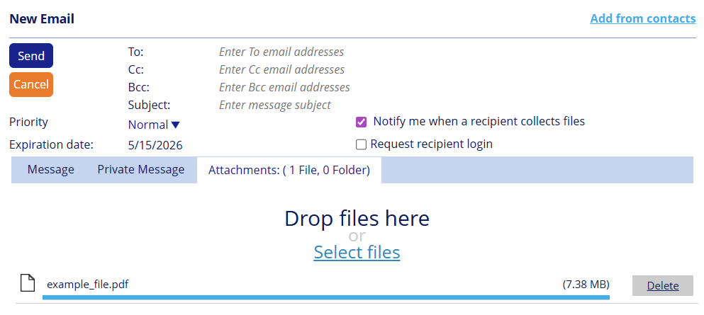
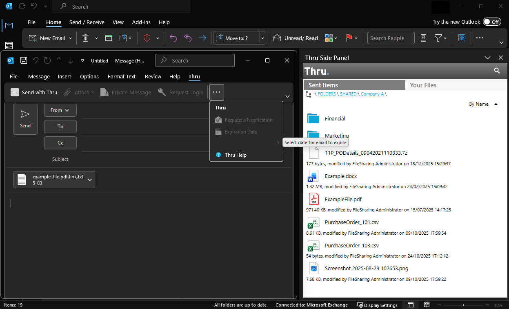
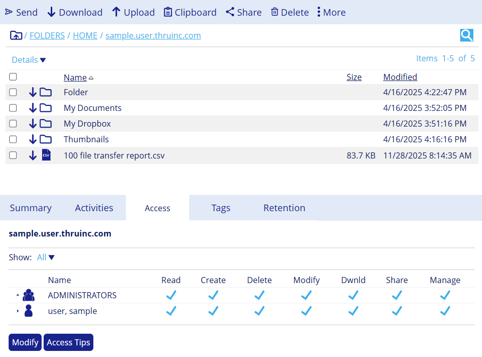

Official CFTP Training · Boomi
Certified File Transfer
Professional
Professional
A comprehensive, modern course covering every file transfer protocol — from the basics of FTP to enterprise-grade AS4, accelerated UDP transfers, and at-rest encryption.
📁 Module 1 · FTP, FTPS, SFTP & SCP
🌐 Module 2 · HTTP, HTTPS & Email Protocols
📦 Module 3 · AS1, AS2, AS3 & AS4
⚡ Module 4 · Accelerated File Transfer
🔄 Module 5 · File Sync & Sharing
🔐 Module 6 · At Rest Encryption
How to navigate: Use the Previous / Next buttons below, click any topic in the sidebar, or use your keyboard arrow keys. Each module ends with an interactive knowledge check quiz.
01
Module 1
FTP, FTPS, SFTP & SCP
Master the file transfer protocol family — from legacy plain-text FTP to certificate-authenticated FTPS, SSH-powered SFTP, and command-line SCP.
FTP Basics
Active & Passive Modes
FTPS Explicit
FTPS Implicit
TLS 1.3
SFTP / SSH
SCP
X.509 Certificates
Module 1 · FTP
What Can FTP Do?
✅ FTP CAN ALWAYS
- Upload and download files
- List directory contents
- Create and delete directories
- Rename and delete files
- Resume interrupted transfers
- Execute custom server commands
❌ FTP CANNOT
- Secure data in transit — no encryption
- Secure data at rest
- Use a single firewall-friendly port
- Perform strong two-factor authentication
⚠️ FTP CAN SOMETIMES
- Check integrity of files (XCRC/XMD5 extensions)
- Rename & delete files (server-dependent)
Module 1 · FTP
FTP Introduction
File Transfer Protocol — the original, the most widely supported, and the most problematic
📅
Oldest Protocol
FTP dates back to 1971. It predates TCP/IP itself. Virtually every file transfer server in the world supports it.
🔓
No Encryption
All data — including usernames, passwords, and file content — travels in plain text. Anyone on the network can intercept it.
🔌
Two TCP Ports
FTP uses Port 21 for the control channel (commands) and Port 20 for the data channel (file content) in Active mode.
🔥
Firewall Hostile
The dual-port design was created before firewalls existed. It causes significant problems with modern network security infrastructure.
⚠️
FTP should never be used to transfer sensitive data over the internet without wrapping it in TLS (FTPS) or replacing it with SFTP. Use FTP only on trusted internal networks where encryption is handled at a lower layer.
Module 1 · FTP
Control Channel vs Data Channel
FTP splits its work across two separate TCP connections
FTP Client
Your Computer
Port 21 — Control
Commands & Responses
FTP Server
Remote Server
↕ A second separate connection is opened for each file transfer ↕
FTP Client
Port 20 (Active) or dynamic (Passive) — Data
File Content
FTP Server
Control Channel (Port 21)
Always open while connected
Commands: USER, PASS, LIST, RETR, STOR, QUIT
Server responds with 3-digit codes (200 OK, 550 Error)
Data Channel (Port 20 / dynamic)
Opened only when transferring data
Closed after each file or directory listing
Port depends on Active vs Passive mode
Module 1 · FTP
FTP Active Mode
The original mode — where the server calls back to the client
FTP Client
e.g. port 1234
Step 1: Connect to port 21
FTP Server
port 21
FTP Client
Step 2: PORT 1234 (tell server my port)
FTP Server
FTP Client
listening on 1234
Step 3: Server connects FROM port 20
FTP Server
FROM port 20
🚨
Firewall Problem: In Active mode, the SERVER initiates the data connection INBOUND to the CLIENT. Most client-side firewalls block unexpected inbound connections — breaking Active mode FTP in most modern environments.
Module 1 · FTP
FTP Passive Mode (PASV)
The recommended mode — the client initiates both connections
FTP Client
Step 1: Connect to port 21
FTP Server
FTP Client
Step 2: Send PASV command
FTP Server
Opens random high port
FTP Client
Step 3: Client connects to server's high port
FTP Server
e.g. port 55000
✅
Firewall Friendly: In Passive mode, the CLIENT initiates BOTH connections. Since all connections originate from the client, firewalls don't block them. This is why PASV is the default for nearly all modern FTP clients.
⚠️
Server-side issue: The server must open a range of high ports for passive mode. Server administrators must configure their firewall to allow inbound connections on this port range.
Module 1 · FTP
Active vs Passive — Comparison
| Feature | Active Mode | Passive Mode (PASV) |
|---|---|---|
| Who opens the data connection? | Server → Client | Client → Server |
| Client-side firewall friendly? | No | Yes |
| Server-side firewall friendly? | Yes | Needs port range |
| Works behind NAT for clients? | Rarely | Yes |
| Recommended for modern use? | No | Yes |
| IPv6 equivalent | EPRT | EPSV |
💡
Almost all modern FTP clients default to Passive mode. When troubleshooting FTP connectivity issues, checking whether the mode is set correctly is one of the first steps.
Module 1 · FTP
FTP Transfer Modes
How FTP represents data during transfer
📝
ASCII Mode
For text files. Line endings are converted between platforms (Windows CRLF ↔ Unix LF). Use for .txt, .csv, .html files. Never use for binary files.
⚙️
Binary Mode (Image)
For all non-text files. Data is transferred byte-for-byte with no conversion. Always use for .zip, .exe, .pdf, images, databases. The safe default.
🖥️
EBCDIC Mode
Legacy mode for IBM mainframe systems. EBCDIC is a character encoding used by mainframes. Rarely needed in modern environments.
⚠️
Common mistake: Using ASCII mode to transfer a binary file (like a .zip or database backup) will corrupt it because line ending conversions will change the byte values. Always use Binary mode when in doubt.
Module 1 · FTP
Custom FTP Commands (QUOTE/SITE)
Sending non-standard commands directly to the FTP server
QUOTE / SITE — FTP clients can send arbitrary commands to the server using the QUOTE or SITE command. What the server does with these is completely server-specific.
NOOP — "No Operation." Keeps the control connection alive during long pauses. Many servers disconnect idle control connections after a timeout.
Integrity commands — Some servers support XCRC, XMD5, XSHA1, XSHA256 to compute checksums of stored files. These are extensions, not standard FTP.
Blocking factor (SITE BFACT) — A mainframe FTP extension that controls how data is blocked for tape systems. Rarely seen outside mainframe environments.
MLST / MLSD — Machine-readable directory listing format. More structured than LIST. Used by automated file transfer clients for reliable parsing.
💡
Custom commands give FTP flexibility beyond its original design. However, since they're not standardised, you must consult the specific server's documentation to know what's supported.
Module 1 · FTP
EPSV & EPRT — IPv6 and NAT Support
Extended Passive and Extended Port commands for modern network environments
The Problem with PASV
The old PASV command encodes the server's IP address in the response as four decimal octets (e.g., 192,168,1,1)
Behind NAT, the server's private IP is wrong — the client needs the public IP
PASV only works with IPv4 — completely incompatible with IPv6
EPSV & EPRT Solutions
EPSV — Extended Passive. Returns only the port number, not the IP address. Works with both IPv4 and IPv6. The client uses the same IP it connected to.
EPRT — Extended Port. The IPv6-compatible replacement for the PORT command in Active mode.
Most modern FTP clients try EPSV first, then fall back to PASV if not supported.
💡
EPSV solves the "wrong IP" NAT problem that causes Passive mode connections to time out. If PASV works locally but fails over the internet, EPSV is often the fix.
Module 1 · FTP
File Integrity Checks
Verifying that a transferred file arrived complete and unmodified
🔍
XCRC
CRC-32 checksum. Fast but not cryptographically secure. Good for detecting accidental corruption, not tampering.
🔍
XMD5
MD5 hash. More robust than CRC. Considered cryptographically weak now but still widely used for integrity checking (not security).
🔐
XSHA1
SHA-1 hash. Stronger than MD5. Also now deprecated for cryptographic purposes but acceptable for transfer integrity.
✅
XSHA256 / XSHA512
SHA-256/512 hashes. Currently the recommended standard for integrity verification. Use these in modern implementations.
💡
Why the X prefix? The
X denotes an FTP extension command — not part of core RFC 959. The underlying algorithms are CRC-32, MD5, SHA-1, SHA-256, and SHA-512; the X-prefixed names (XCRC, XMD5, etc.) are the actual commands sent to the server.💡
How it works: The client requests the server compute a hash of the stored file (e.g.
XCRC filename). The client independently computes the same hash of the local copy and compares. If they match, the file transferred correctly.⚠️
These are extensions — not all FTP servers support them. Check your server documentation. SFTP has built-in integrity checking.
Module 1 · FTPS
What is FTPS?
🔒
FTP + TLS
FTPS is standard FTP with TLS (Transport Layer Security) encryption layered on top. It works just like FTP but all data is encrypted.
🔑
X.509 Certificates
FTPS uses X.509 digital certificates to authenticate the server (and optionally the client). The same certificate technology used by HTTPS websites.
🔥
Still Firewall-Hostile
FTPS inherits FTP's dual-channel design. The data channel is encrypted, which means stateful firewalls can't inspect it to manage dynamic ports. This creates NAT/firewall challenges.
2️⃣
Two Flavours
Explicit: Starts on port 21, upgrades to TLS.
Implicit: TLS-only from the start on port 990.
Implicit: TLS-only from the start on port 990.
Module 1 · FTPS
What Can FTPS Do?
✅ FTPS CAN ALWAYS
- Download files
- Work over one firewall port (control channel only)
- Secure data in transit
❌ FTPS CANNOT
- Secure data at rest
- Use a single firewall port for data transfers
- Work cleanly through NAT with encrypted data channels
⚠️ FTPS CAN SOMETIMES
- Upload files
- Rename and delete files
- Create/delete folders
- Execute custom commands on server
- Check integrity of files
- Perform strong 2-factor auth (with client certs)
Module 1 · FTPS
FTPS Explicit Mode
Start plain, upgrade to TLS — the recommended approach
FTP Client
1. Connect to port 21 (plain FTP)
FTP Server
2. Client sends: AUTH TLS
3. Server: 234 AUTH TLS OK ←
4. TLS Handshake (encrypted from here)
TLS Version Requirements
SSL 2.0/3.0
Disabled
Critically insecure
TLS 1.0
⛔ Disabled
Deprecated — MUST be disabled
TLS 1.1
⛔ Disabled
Deprecated — disable
TLS 1.2
Acceptable
Still supported
TLS 1.3
⭐ RECOMMENDED
Released 2018. Faster handshake (1 round-trip vs 2). Removes weak cipher suites. Mandatory forward secrecy. Configure your FTPS server to require TLS 1.3 minimum where possible, or TLS 1.2 as fallback.
Module 1 · FTPS
FTPS Implicit Mode
TLS-only from the very first byte — legacy but still used
FTP Client
1. TLS Connect to port 990
FTP Server
port 990
↕ Everything is encrypted from the start — no plain-text negotiation ↕
2. FTP commands (over TLS)
Advantages
Encryption is mandatory — no chance of accidentally connecting without TLS
Simpler connection model — no AUTH TLS negotiation step
Still widely used in legacy enterprise environments
Disadvantages
Port 990 is non-standard — requires firewall rule changes
Many generic FTP clients only support Explicit mode
Considered "legacy" — Explicit mode is the modern standard
Module 1 · FTPS
Explicit vs Implicit FTPS
| Feature | Explicit (FTPS) | Implicit (FTPIS) |
|---|---|---|
| Default port | 21 (same as plain FTP) | 990 (separate port) |
| How TLS starts | Client sends AUTH TLS command | TLS handshake immediately on connect |
| Can allow plain-text fallback? | Server can allow (misconfiguration risk) | No — TLS always required |
| RFC standard? | Yes — RFC 4217 | Documented but not formally standardised |
| Client support | Widely supported | Less common |
| Recommended for new deployments? | Yes | Only for legacy compatibility |
| TLS version to use | TLS 1.3 (minimum TLS 1.2) — applies to both | |
Module 1 · FTPS
FTPS and Firewalls
Why FTPS creates firewall headaches
The core problem: Stateful firewalls (and NAT devices) handle plain FTP by inspecting the PORT/PASV commands to know which data port to open. With FTPS, these commands are encrypted — the firewall can't read them.
Result: The firewall can't automatically open the dynamic data port, causing data connections to hang or time out even when the control channel works fine.
NAT problem: In Explicit FTPS, the CCC (Clear Command Channel) command can be used — but this drops encryption on the control channel. Not ideal.
Corporate proxies: Many corporate HTTP/HTTPS proxies don't support FTPS tunnelling at all, making FTPS impossible from some corporate networks.
⚠️
The SFTP alternative: SFTP uses a single port (22) with all data in a single encrypted channel — completely avoiding the dual-port firewall problem. If firewall traversal is a major concern, SFTP is often the better choice over FTPS.
Module 1 · FTPS
Firewall Solutions for FTPS
🔌
Fixed Port Range
Configure the FTPS server to only use a defined range of ports for passive connections (e.g. 50000–51000). Open this range on the firewall permanently. Simple and widely supported.
🔓
CCC (Clear Command Channel)
The client sends CCC to revert the control channel to plain text after authentication. The firewall can then read PASV responses. Trade-off: the control channel is no longer encrypted.
🌐
EPSV Only Mode
Force EPSV instead of PASV. EPSV doesn't embed the server IP in the response, which helps with NAT traversal. Some firewalls handle EPSV better than PASV.
🔁
FTP-Aware Proxy
Use an FTP-aware application layer gateway that understands FTPS. Rare and complex. Usually simpler to use fixed port ranges instead.
💡
Best practice: Fixed passive port range (combined with server-side firewall allowing inbound on that range) is the most reliable and widely compatible solution for FTPS in production.
Module 1 · FTPS
FTPS Client Certificate Authentication
Two-factor authentication using X.509 digital certificates
How it Works
The server ALWAYS presents an X.509 certificate to validate its identity to the client
The client MAY also present an X.509 certificate — this is "mutual TLS" or "two-factor auth"
When used with a password, the client certificate is a true second factor — "something you have" plus "something you know"
Server certificates are usually pre-approved (pre-registered) through a Certificate Authority (CA)
Certificate Facts
Self-signed: Anyone can generate their own certificate without a CA. Common in B2B partnerships where both parties exchange certs directly.
CA-issued: Certificates from a trusted Certificate Authority (e.g. DigiCert, Let's Encrypt). Automatically trusted by most systems.
Key length: Minimum 2048-bit RSA. Prefer 4096-bit or ECDSA for new deployments.
🔐
Security benefit: Even if a password is compromised, an attacker without the client certificate cannot connect. This is why client cert auth is the gold standard for unattended automated FTPS connections.
Module 1 · SFTP
What is SFTP?
✅ SFTP CAN ALWAYS
- Upload and download files
- Work over a single firewall port (22)
- Secure data in transit
- Rename and delete files
- Create and delete directories
- Check integrity of files (built-in)
- Perform strong two-factor auth (SSH keys)
❌ SFTP CANNOT
- Secure data at rest (that's a separate concern)
- Execute arbitrary server-side commands (SFTP subsystem only)
- Pull or download files from a push-only partner
ℹ️
Important: Despite the similar name, SFTP has nothing to do with FTP. It is the SSH File Transfer Protocol — a completely independent protocol that runs over SSH. It has no shared code or protocol ancestry with FTP or FTPS.
Module 1 · SFTP
How SFTP Connects
A single encrypted channel — simple and firewall-friendly
SFTP Client
Any OS
Single SSH Connection — Port 22
Commands + File Data + Auth — all encrypted
SFTP Server
SSH on Port 22
1️⃣
Single Port
Everything flows through SSH port 22. One firewall rule. No dynamic ports. No passive/active confusion.
🔒
Always Encrypted
SSH encrypts everything from the first byte. There's no unencrypted mode — security is built in, not optional.
🔑
SSH Key Auth
Supports password auth and SSH public-key auth. Keys are typically more secure than passwords for automated transfers.
🌐
Native *nix Support
Built into Linux and macOS. Available on Windows via OpenSSH (standard since Windows 10). Wide platform coverage.
Module 1 · SFTP
SFTP Key Authentication
Using SSH public/private key pairs instead of passwords
How SSH Key Auth Works
Client generates a key pair: one private key (secret, stays on client) and one public key (shared with server)
The client's public key is added to the server's
authorized_keys fileAt login, the server sends a challenge; the client signs it with the private key; the server verifies with the public key
Private keys can be protected with a passphrase — making them a true two-factor credential
Key Types
RSA — Most widely supported. Use 4096-bit for new keys.
ECDSA / Ed25519 — Newer elliptic curve algorithms. Smaller keys, faster, equally secure. Ed25519 recommended for new deployments.
DSA — Outdated. Do not use.
✅
SSH keys can be self-generated — no Certificate Authority needed. This makes them easy to set up for automated B2B file transfers.
Module 1 · SCP
What is SCP?
Secure Copy Protocol — the command-line file copier
✅ SCP CAN
- Copy files securely over SSH
- Work over a single port (22)
- Use SSH key authentication
- Copy recursively (entire directories)
- Be easily scripted in shell scripts
❌ SCP CANNOT
- List remote directory contents
- Delete or rename remote files
- Resume interrupted transfers
- Check file integrity independently
ℹ️
SCP vs SFTP: SCP is simpler — it's basically a "secure cp" command. SFTP is a full file transfer protocol with directory operations. For most use cases, SFTP is preferred. SCP is useful for quick one-off command-line copies.
Note: OpenSSH has deprecated the old SCP protocol internally — modern
Note: OpenSSH has deprecated the old SCP protocol internally — modern
scp commands actually use SFTP under the hood on updated systems.Module 1 · SCP
SCP Command Examples
Copy local file to remote server:
scp /local/file.txt user@server.example.com:/remote/path/Copy remote file to local machine:
scp user@server.example.com:/remote/file.txt /local/path/Copy entire directory recursively:
scp -r user@server.example.com:/remote/folder/ /local/path/Use a specific SSH key file:
scp -i ~/.ssh/mykey.pem file.txt user@server.example.com:/path/💡
SCP is predominantly used on Linux and macOS systems. It's excellent for automated scripts, cron jobs, and CI/CD pipelines where a simple file copy is needed without a full SFTP client library.
Knowledge Check
Module 1 Quiz — FTP, FTPS, SFTP & SCP
Answer all 5 questions. Click an option to reveal the answer and explanation.
Question 1 of 5
What are the default TCP port numbers for FTP's control and data connections?
A
Port 20 (control) and Port 21 (data)B
Port 21 (control) and Port 20 (data)C
Port 22 (control) and Port 23 (data)D
Port 80 (control) and Port 443 (data)Question 2 of 5
In FTP Active mode, which side initiates the data connection?
A
The client initiates both connectionsB
The server initiates the data connection back to the clientC
A relay server initiates both connectionsD
Both sides connect simultaneouslyQuestion 3 of 5
FTPS Explicit mode works by:
A
Connecting directly on port 990 with TLS from the first byteB
Starting on port 21 as plain FTP, then upgrading via the AUTH TLS commandC
Using a separate encryption proxy serverD
Automatically detecting whether the server supports TLSQuestion 4 of 5
Which TLS version is currently REQUIRED to be disabled on FTPS servers?
A
TLS 1.0 and TLS 1.1B
TLS 1.2C
TLS 1.3D
None — all TLS versions should be enabled for compatibilityQuestion 5 of 5
What is the key difference between SFTP and FTPS?
A
SFTP is faster than FTPS in all situationsB
FTPS adds TLS to FTP; SFTP is an entirely separate protocol using SSH on port 22C
SFTP only supports passwords; FTPS only supports certificatesD
They are the same protocol with different names0 / 5
answered correctly
02
Module 2
Advanced Protocols
HTTP, HTTPS, WebDAV (now out of date), and email-based file transfer — plus a comprehensive Protocol Selection Guide.
HTTP & HTTPS
WebDAV
SMTP / POP3 / IMAP
TLS 1.3 Update
Protocol Selection Guide
Module 2 · HTTP
What is HTTP?
⬇️
Download Anything, From Anywhere
HTTP can download any type of file from any web server. It's the most universally accessible file transfer mechanism in the world — every device has an HTTP client (a web browser).
🔗
Identifies Resources with URLs
HTTP uses URLs to address resources — not file paths. The URL includes protocol, hostname, optional port, path, and query parameters. This abstraction enables dynamic content generation.
🔑
Custom Authentication
HTTP has no standard file transfer authentication. Every server implements its own: Basic Auth, OAuth 2.0, API keys, form-based login. Very flexible but inconsistent.
ℹ️
HTTP was designed for the web — fetching HTML pages, images, and scripts. Its use as a file transfer protocol is secondary, but it's so ubiquitous that it's become one of the most common ways to transfer files.
Module 2 · HTTP
What Can HTTP Do?
✅ HTTP CAN ALWAYS
- Download files from any server
- Work over one firewall port (80)
❌ HTTP CANNOT
- Secure data at rest
- Secure data in transit (use HTTPS for that)
- Perform strong authentication natively
⚠️ HTTP CAN SOMETIMES (server-dependent)
- Upload files
- Rename and delete files
- Create/delete folders
- Execute custom commands on server
- Check integrity of files
- Resume interrupted downloads
Module 2 · HTTP
HTTP URLs — Anatomy
http://www.acme.com:8080/folder/file?arg1=one&arg2=two
Protocol
http:// or https:// — specifies whether encryption is usedHostname
www.acme.com — the DNS name or IP address of the serverPort (optional)
:8080 — optional. Defaults to 80 (HTTP) or 443 (HTTPS) if omittedPath
/folder/file — may match a real file on disk, or be a virtual path handled by the applicationQuery String
?arg1=one&arg2=two — parameters passed to the server. Used to request specific data or actionsModule 2 · HTTP
HTTP URLs — Original Use
When the path directly matched a file on the web server's disk
In the early web, the URL path directly mapped to a file on the server's filesystem
Example:
http://www.acme.com/stylesheets/main.css would serve the file at C:\inetpub\wwwroot\stylesheets\main.cssThe web server simply reads the file from disk and sends it in the HTTP response
This made HTTP a simple static file server — like a read-only FTP with a browser interface
📁
This original "serve files from disk" model is still how most CDNs (Content Delivery Networks) work — files are stored on disk and served directly. Static web hosting (GitHub Pages, S3 websites, etc.) works the same way.
Module 2 · HTTP
HTTP URLs — Modern Use
When the path is interpreted by an application to generate content dynamically
URL rewriting / routing: Modern web frameworks (Express, Django, ASP.NET, etc.) "route" requests — the path is matched to a function, not a file
Dynamic generation: Example —
http://www.acme.com/reports/budget generates a budget PDF on-the-fly from database dataREST APIs: URLs become verbs and nouns —
GET /api/files/123 retrieves file #123; POST /api/files uploads a new fileThe URL no longer reflects the disk structure at all — it's an abstract resource identifier
💡
Modern managed file transfer servers use this model —
/download/file123 might query a database for file metadata, check permissions, log the access, and then stream the file from object storage. All through a clean URL.Module 2 · HTTP
HTTP Verbs (Methods)
How HTTP communicates intent, not just data
GET
Download a resource. What happens when you type a URL in a browser. Read-only. Parameters go in the URL query string.
POST
Submit data to the server — form submissions, file uploads. Parameters go in the request body, not the URL.
PUT
Upload a file to a specific location. Used by REST APIs. Replaces the entire resource at the target URL.
DELETE
Request the server delete a resource. Used in REST APIs for file management.
OPTIONS
Ask the server what methods it supports for a URL. Used by browsers for CORS preflight checks.
Headers & Cookies
Metadata attached to every request: authentication tokens, content type, session cookies, caching instructions, etc.
Module 2 · HTTP
HTTP File Uploads
The basic browser-based upload mechanism
Standard HTML form uploads use
multipart/form-data encoding — the file is embedded in the HTTP POST request bodyOnly a small number of web servers support raw file uploads via standard HTTP forms by default
Almost all "managed file transfer" servers support HTTP uploads — but they each implement their own custom upload interface
Basic form:
<input type="file"> + <form method="POST" enctype="multipart/form-data">Basic upload form example:
📎 No file selected
Browse
Upload 90 MB
⚠️
Basic HTTP uploads have no resume capability — if the connection drops mid-upload, you start over. Managed file transfer clients add chunking and resume on top of HTTP.
Module 2 · HTTP
HTTP Advanced File Uploads
What managed file transfer clients add on top of basic HTTP
🖱️
Drag and Drop
Browser-based MFT clients support drag-and-drop upload using the HTML5 File API and XMLHttpRequest/Fetch.
🔁
Resume Broken Transfers
Chunked uploads split files into pieces. If interrupted, only the missing chunks are resent. Essential for large files.
📂
Multiple Files & Folders
Upload entire folder trees at once. The client traverses the local folder structure and uploads files in order.
✅
Integrity Checks
Client computes checksum before upload; server verifies after receipt. Catches transmission errors.
ℹ️
Almost all managed file transfer servers support HTTP/HTTPS for uploads. However, every server has a different upload interface — there is no universal standard. Each vendor supplies their own client or web UI.
Module 2 · HTTPS
What is HTTPS?
🔒
Works Like HTTP
HTTPS is HTTP with TLS encryption. All the same verbs, URLs, headers, and responses — just encrypted in transit. Same URLs, same server software.
🛡️
Encrypts Data In Transit
TLS encrypts the entire HTTP conversation. No one on the network can read your data, even on shared Wi-Fi or compromised routers.
🔍
Verifies Server Identity
The server's TLS certificate proves it's the real server (not an impersonator). Browsers show the padlock icon when the certificate is valid.
✅
Always use HTTPS for file transfers. Plain HTTP should never be used over the internet — all passwords, data, and file content are visible to anyone who can intercept the traffic. HTTPS on port 443 with TLS 1.3 is the modern standard.
Module 2 · HTTPS
What Can HTTPS Do?
✅ HTTPS CAN ALWAYS
- Download files securely
- Work over one firewall port (443)
- Secure data in transit
❌ HTTPS CANNOT
- Secure data at rest
- Perform strong authentication natively (custom per-server)
⚠️ HTTPS CAN SOMETIMES
- Upload files
- Rename and delete files
- Create/delete folders
- Execute custom commands on server
- Check integrity of files
- Perform strong 2-factor auth (client certs)
Module 2 · HTTPS
HTTPS Client Certificate Authentication
Mutual TLS — the strongest form of HTTPS authentication
Server Authentication (Always)
Server ALWAYS presents an X.509 certificate to prove its identity
Client validates the cert against trusted Certificate Authorities
If invalid/expired, browser shows security warning
Client Authentication (Optional — Mutual TLS)
Client MAY also present an X.509 certificate to the server
Server validates the client's cert — if invalid, connection is rejected
When combined with a password = true two-factor authentication
💡
Mutual TLS (mTLS) is increasingly common in API security and B2B integrations. It eliminates the risk of password theft because the client certificate acts as a cryptographic identity that cannot be phished.
Module 2 · HTTPS
Certificate and Key Strength
Not all key sizes are equal
"2048-bit certificate" is a confusing term — the certificate itself is small. The 2048-bit refers to the RSA key embedded in the certificate. Larger keys = harder to break.
SSL sessions use PKI only to exchange a symmetric session key. The actual data is encrypted with a fast symmetric cipher (AES). This is why SSL/TLS is practical for large file transfers.
Common RSA key sizes: 1024-bit (broken — do not use), 2048-bit (minimum acceptable), 4096-bit (recommended for new deployments)
Rule of thumb: Server certificates should use at least 2048-bit RSA or ECDSA P-256. The SSL/TLS session key is typically 128 or 256-bit AES — much shorter, but symmetric keys work differently.
💡
Elliptic curve (ECDSA) keys provide equivalent security with much smaller key sizes. An ECDSA P-256 key (256 bits) is comparable to a 3072-bit RSA key. TLS 1.3 prefers ECDSA.
Module 2 · HTTPS
SSL vs TLS — Updated for 2024+
Despite saying "SSL" everywhere, we almost always mean TLS
TLS is the successor to SSL. SSL was developed by Netscape in the 1990s. TLS (Transport Layer Security) replaced it in 1999. We still say "SSL" casually but all modern "SSL" is actually TLS.
SSL v2.0 and v3.0 are critically insecure and must never be used. They contain fundamental design flaws (POODLE, DROWN attacks).
TLS 1.0
⛔ DISABLE NOW
Deprecated by RFC 8996 (2021). Known vulnerabilities: BEAST, POODLE.
TLS 1.1
⛔ DISABLE NOW
Deprecated by RFC 8996 (2021). Removed from all major browsers.
TLS 1.2
✓ ACCEPTABLE
Still widely used. Secure when configured with strong ciphers. Support as minimum.
TLS 1.3
⭐ REQUIRED
Released 2018. Faster, more secure. Mandatory forward secrecy. Configure as preferred.
🚨
Action required: If your FTPS or HTTPS server still allows TLS 1.0 or 1.1, disable them immediately. Check your server configuration and ensure TLS 1.2 is the minimum, TLS 1.3 is the default. Most compliance frameworks (PCI-DSS, HIPAA, GDPR) now require this.
Module 2 · WebDAV
WebDAV — A Protocol Worth Knowing, But Out of Date
⚠️
WebDAV is considered out of date for modern file transfer deployments. While it still exists in some legacy enterprise environments, most organisations have moved to SFTP or HTTPS-based managed file transfer. We cover it here for completeness.
✅ WebDAV CAN
- Download and upload files
- Rename and delete files
- Create/delete folders
- Work over one firewall port (443)
- Secure data in transit (WebDAVS)
❌ WebDAV CANNOT
- Secure data at rest
- Execute custom commands on server
- Check integrity of files
- Do strong authentication natively
What it is: WebDAV (Web Distributed Authoring and Versioning) extends HTTP to add write operations — think of it as "read-write HTTP" for files and folders
Why it's out of date: Poor reputation from Microsoft's broken early IIS implementation, slow performance vs SFTP, and poor cross-vendor interoperability
Module 2 · WebDAV
Why WebDAV Lost the Battle
💔
Insecure Reputation
Microsoft's early IIS WebDAV implementation had multiple serious security vulnerabilities. This gave WebDAV a reputation it never fully recovered from.
🐌
Slow Performance
WebDAV's overhead — PROPFIND requests, XML parsing, multiple round trips — makes it significantly slower than SFTP for the same file transfer task.
🔀
Interoperability Problems
"Just use my web interface instead" — vendors often added proprietary extensions, breaking compatibility between clients and servers from different vendors.
🔄
Where It Survives
SharePoint (which uses WebDAV internally), some older enterprise CMS systems, and network drive mounting on Windows/macOS still use WebDAV.
💡
Modern alternatives: For file management over HTTP, use a proper REST API with HTTPS. For file transfer, SFTP or HTTPS managed file transfer is preferred. WebDAV should not be chosen for new implementations.
Module 2 · Email Protocols
The Three Main Email Protocols
📤
SMTP
Simple Mail Transfer Protocol
Used to SEND email. Both email clients (to mail server) and mail servers (to other mail servers) use SMTP. Also used to push files as email attachments.
Used to SEND email. Both email clients (to mail server) and mail servers (to other mail servers) use SMTP. Also used to push files as email attachments.
📥
IMAP
Internet Message Access Protocol
Used to READ email from a server while leaving it on the server. Synchronises folders across devices. The modern standard for email clients.
Used to READ email from a server while leaving it on the server. Synchronises folders across devices. The modern standard for email clients.
📥
POP3
Post Office Protocol v3
Used to DOWNLOAD email from a server, usually deleting it from the server. One-device model. Becoming obsolete — use IMAP instead.
Used to DOWNLOAD email from a server, usually deleting it from the server. One-device model. Becoming obsolete — use IMAP instead.
💡
For file transfer purposes: SMTP is used to push files as email attachments (common in AS1 and basic file send solutions). IMAP is used to pull files from a mailbox. Use SMTP to send and IMAP (or POP3) to receive.
Module 2 · Email Protocols
How Email Works
Sender
Email Client
SMTP (send)
Sender's Mail Server
SMTP (relay)
Recipient's Mail Server
IMAP/POP3 (read)
Recipient
Email Client
Sender → Sender's mail server: The email client uses SMTP (port 587 or 465) to submit the email to the user's outgoing mail server
Mail server to mail server: Mail servers relay messages between each other using SMTP (port 25). This can traverse multiple relay hops.
Recipient reads mail: The recipient's email client connects to the mail server using IMAP (preferred) or POP3 to read messages
Module 2 · Email Protocols
SMTP, POP3 & IMAP — Capabilities
SMTP (Send)
✅ CAN
- Push files as email attachments
- Be secured with SSL/TLS
❌ CANNOT
- Pull files from other servers
- Browse a mailbox
IMAP (Modern Read)
✅ CAN
- Pull files (attachments) from servers
- Delete original messages
- Synchronise email folders across devices
- Be secured with SSL/TLS
❌ CANNOT
- Push files as attachments
- Be trusted if its key is also accessed interactively
⚠️
POP3 is becoming obsolete. It downloads mail and deletes it from the server, making it a single-device protocol. IMAP (which syncs across all devices) is the modern choice.
Module 2 · Email Protocols
Email Protocol Port Summary
| Protocol | Unencrypted | STARTTLS (Upgrades to TLS) | SSL/TLS from Connection |
|---|---|---|---|
| SMTP (send) | 25 Legacy | 587 Recommended | 465 Also used |
| POP3 (read, legacy) | 110 | n/a | 995 |
| IMAP (read, modern) | 143 | 143 with STARTTLS | 993 Recommended |
ℹ️
STARTTLS on port 25 is supported but STARTTLS is often required on port 587 by modern mail providers. Port 25 is commonly blocked by ISPs to prevent spam relaying. For sending email from applications, use port 587 with STARTTLS (or 465 with SSL).
Module 2 · Protocol Selection Guide
Protocol Selection Guide — 2024 Edition
Choose the right protocol for your file transfer needs
| Feature | FTP | FTPS | SFTP | SCP | HTTP | HTTPS | AS2 |
|---|---|---|---|---|---|---|---|
| Upload or download | Both | Both | Both | Both | Both* | Both* | Upload |
| Secure in transit | No | Yes | Yes | Yes | No | Yes | Yes |
| Single firewall port | No | No | Yes (22) | Yes (22) | Yes (80) | Yes (443) | Yes (80/443) |
| Default port | 21/20 | 21 (Exp) 990 (Imp) | 22 | 22 | 80 | 443 | 80/443 |
| Strong 2-factor auth | No | Certs | Keys | Keys | No | Certs | Certs |
| Non-repudiation | No | No | No | No | No | No | Yes (MDN) |
| Native Windows client | Yes | No | OpenSSH | OpenSSH | Browser | Browser | No |
| Native macOS / Linux | Yes | No | Yes | Yes | Browser | Browser | No |
| Native mobile client | No | No | No | No | Browser | Browser | No |
| Easily scripted | Yes | Yes | Yes | Yes | With tools | With tools | Yes |
| Transfer resume | Yes | Yes | Yes | No | Partial | Partial | Yes |
| Recommended for new use? | No | With TLS 1.3 | Yes | Simple tasks | No (use HTTPS) | Yes | B2B/EDI |
💡
* HTTP/HTTPS upload capability depends entirely on the server's implementation. Most managed file transfer servers support both upload and download over HTTPS.
Knowledge Check
Module 2 Quiz — Advanced Protocols
5 questions. Click an option to reveal the answer.
Question 1 of 5
Which TLS version is currently REQUIRED by modern compliance frameworks (PCI-DSS, HIPAA)?
A
TLS 1.0 minimumB
TLS 1.2 minimum (TLS 1.3 preferred)C
TLS 1.3 only — all other versions must be disabledD
Any TLS version is acceptableQuestion 2 of 5
What HTTP verb is used to upload a file to a specific URL in a REST API?
A
GETB
DELETEC
PUT (or POST for form uploads)D
OPTIONSQuestion 3 of 5
Which email protocol should you use to SEND email from an application?
A
IMAP on port 993B
POP3 on port 995C
SMTP on port 587 (with STARTTLS)D
HTTP on port 80Question 4 of 5
Why is WebDAV considered out of date for modern file transfer?
A
It has no encryption supportB
Poor reputation from early security flaws, slow performance, and interoperability issuesC
It is too new and lacks broad implementationD
It only works on Linux systemsQuestion 5 of 5
In the Protocol Selection Guide, which protocol is the ONLY one with built-in non-repudiation?
A
HTTPSB
SFTPC
AS2 (via MDN signed receipts)D
FTPS0 / 5
answered correctly
03
Module 3
AS* Protocols
Applicability Statement protocols — the gold standard for B2B and EDI file transfer with built-in encryption, signing, and non-repudiation. Plus the modern AS4 standard.
AS1 (via Email)
AS2 (via HTTP/S)
AS3 (via FTP/S)
AS4 (Web Services)
PKI & MDN
Non-Repudiation
Module 3 · AS* Protocols
"Applicability Statement" Protocols
The "next generation" B2B file transfer protocols — fiendishly complicated, but powerful
🔒
Secure Data in Motion
AS* protocols encrypt the file payload using PKI (asymmetric encryption). Only the intended recipient can decrypt it.
🔐
Secure Data at Rest
The encrypted payload remains encrypted until the recipient decrypts it. Unlike SFTP or FTPS, the data is encrypted end-to-end, not just in transit.
✍️
Non-Repudiation
The sender digitally signs the message. The recipient sends back a signed MDN receipt. Neither party can deny sending or receiving the file.
📋
Strong Integrity
Signed data includes a cryptographic hash. Any tampering with the content invalidates the signature — immediately detectable.
⚙️
Complexity warning: AS* protocols are significantly more complex to configure than SFTP or FTPS. Both parties must exchange X.509 certificates, configure AS IDs, agree on encryption algorithms, and set up MDN return paths. This is normal — budget time for setup.
Module 3 · AS* Protocols
AS* — The Core Concept
🔐
1. Encrypt with PKI
The file is encrypted using the recipient's public key (via S/MIME). Only the recipient's private key can decrypt it. Even the sender cannot read the file after encryption.
📡
2. Send via File Transfer
The encrypted, signed package is sent using a standard protocol:
AS1 = email (SMTP)
AS2 = HTTP/S
AS3 = FTP/S
AS4 = Web Services
AS1 = email (SMTP)
AS2 = HTTP/S
AS3 = FTP/S
AS4 = Web Services
✅
3. Return a Signed Receipt
The recipient sends back an MDN (Message Disposition Notification) — a digitally signed acknowledgement that the file was received and verified.
ℹ️
The AS* protocols rely on PKI (Public Key Infrastructure) — the same technology used by HTTPS and FTPS certificates. Understanding how PKI works is essential for working with AS* protocols.
Module 3 · AS* Protocols
What Can AS* Do?
✅ AS* CAN ALWAYS
- Send files to a specific recipient
- Secure data in transit
- Secure data at rest (end-to-end encryption)
- Ensure integrity of data
- Perform strong authentication (X.509 certs)
- Return signed receipt — non-repudiation
- Work with partners who have no AS* server (AS1 via email)
❌ AS* CANNOT
- Pull or download files from a partner
- Browse remote directories
- Be easily configured (complex setup)
Module 3 · PKI
How PKI Works (Review)
The foundation of all AS* protocol security
The Key Concept
Each party has a key pair: a PUBLIC key (share freely) and a PRIVATE key (never share)
Anything encrypted with your PUBLIC key can only be decrypted with your PRIVATE key
Anything signed with your PRIVATE key can be verified by anyone with your PUBLIC key
This asymmetry is the foundation of all PKI-based security
The Exchange Process (Ed sends to Joe)
Ed and Joe each share their Public keys with each other
Ed encrypts the file using Joe's PUBLIC key
Ed signs the file using Ed's own PRIVATE key
Joe decrypts using Joe's PRIVATE key
Joe verifies the signature using Ed's PUBLIC key
🔑
Golden rule: Private keys are NEVER exchanged. Only public keys are shared. If a private key is ever compromised, all messages encrypted for that party are at risk. Generate a new key pair and revoke the old certificate.
Module 3 · AS* Protocols
How AS* Works — End to End
📤 SENDER STEPS
Compress the file (optional)
Sign with sender's PRIVATE key
Encrypt with recipient's PUBLIC key
Send via AS1/AS2/AS3/AS4 transport
📥 RECIPIENT STEPS
Decrypt with recipient's PRIVATE key
Verify signature with sender's PUBLIC key
Check integrity of payload
Send signed MDN receipt back to sender
✅
The MDN (Message Disposition Notification) is what makes AS* special. It's a digitally signed "I received it and it was intact" receipt. The combination of signed message + signed MDN creates legally defensible proof of delivery.
Module 3 · AS1
AS1 Introduction — "Uses Email"
✅ AS1 CAN
- Send files using email servers
- Secure data in transit
- Secure data at rest
- Ensure integrity of data
- Perform strong authentication
- Return signed receipt (MDN) — via email or SMTP
❌ AS1 CANNOT
- Pull or download files
- Return MDN immediately (email is asynchronous)
- Handle very large files well (email limits)
ℹ️
Practical reality: AS1 uses plain old email (SMTP to send, IMAP/POP3 to receive) as its transport layer. The AS1 payload is an S/MIME-encrypted email message. This makes AS1 usable with partners who have only basic email infrastructure — no special server software required. The trade-off is email's inherent delays and size limits.
Module 3 · AS1
How AS1 Works
Sender
Any Email Server
SMTP (sends S/MIME encrypted email)
Mail Relay(s)
Email routing
SMTP (forwarded)
Recipient
Any Email Server
↕ Recipient sends back MDN receipt via email (asynchronous — could take minutes or hours) ↕
Sender
MDN receipt (signed email reply)
Recipient
💡
AS1 is best suited for smaller files where email delays are acceptable. For high volume or large files, AS2 (HTTP-based) is much more efficient. AS1 is still useful when the partner doesn't have an AS2 server.
Module 3 · AS2
AS2 Introduction — "Uses HTTP/S"
✅ AS2 CAN
- Send files using HTTP/S directly
- Secure data in transit
- Secure data at rest (end-to-end encryption)
- Ensure integrity of data
- Perform strong authentication (X.509 certs)
- Return MDN receipt immediately (synchronous) or asynchronously
❌ AS2 CANNOT
- Pull or download files (push-only)
- Return MDN immediately if using Async mode
✅
AS2 is the most widely used AS* protocol — especially for EDI (Electronic Data Interchange) between trading partners. It's the protocol behind most retail/supply-chain B2B integrations (Walmart, Target, Amazon supplier portals all require AS2).
Module 3 · AS2
The Three AS2 MDN Modes
⚡
Sync (Synchronous)
The MDN is returned in the same HTTP response — immediate acknowledgement. Best for small files. Requires the sender to wait for the response. Simple setup.
🔄
Async (Asynchronous)
The HTTP response is just "202 Accepted." The MDN is sent later in a separate HTTP request from the recipient back to the sender. Both parties need AS2 servers. Good for large files.
📧
Async via Email
Like async, but the MDN is returned via email (SMTP) rather than HTTP. Used when the recipient's AS2 server can't make outbound HTTP connections. More complex — use only when required.
💡
Rule of thumb: Small files → AS2 Sync. Large files or high volume → AS2 Async. Only use Async+Email when your trading partner has no outbound HTTP capability.
Module 3 · AS2
How AS2 Sync Works
Sender's AS2 Server
HTTP/S POST (encrypted + signed file)
Recipient's AS2 Server
Recipient decrypts, verifies, processes, then responds in the SAME HTTP connection...
Sender's AS2 Server
HTTP 200 OK + MDN (signed receipt) ←
Recipient's AS2 Server
✅
Best for: Small to medium files. Immediate confirmation. The sender doesn't need to run an inbound server — the MDN comes back in the same HTTP response. Simple and reliable.
Module 3 · AS2
How AS2 Async Works
Sender's AS2 Server
HTTP/S POST (file) + MDN return URL
Recipient's AS2 Server
Recipient immediately responds: "202 Accepted" — then processes asynchronously...
Sender's AS2 Server
Must accept inbound connections
Separate HTTP/S POST — MDN receipt ←
Recipient's AS2 Server
💡
Trade-off: Both sender AND recipient need inbound-accessible AS2 servers. The MDN may arrive minutes or hours later. More complex setup, but handles large files better because the sender doesn't have to maintain an open HTTP connection while the file is processed.
Module 3 · AS2
AS2 Async + Email MDN
When the recipient can't make outbound HTTP connections
Same as AS2 Async, but instead of an outbound HTTP POST for the MDN, the recipient sends the MDN via email (SMTP)
The sender includes an email address in the original AS2 request:
Disposition-Notification-To: partner@company.comUse this mode only when the recipient's server cannot make outbound HTTP connections (strict egress firewall policy)
Most complex configuration — requires both parties to have email infrastructure for MDN routing
Supports files of all sizes and volumes. Very reliable but most complex to set up.
⚠️
The Async+Email mode is the most complex AS2 configuration. Only use it when there's no alternative. Direct AS2 Sync or Async (HTTP) is far simpler to manage in production.
Module 3 · AS3
AS3 Introduction — "Uses FTP/S"
✅ AS3 CAN
- Send files using FTP/S servers
- Secure data in transit
- Secure data at rest
- Ensure integrity of data
- Perform strong authentication
- Return signed MDN receipt — via FTP or email after transfer
❌ AS3 CANNOT
- Pull or download files
- Return MDN immediately (asynchronous only)
ℹ️
AS3 niche: AS3 is rare. It targets organisations that already have FTP/S infrastructure and want to add AS* encryption/signing without deploying an HTTP server. In practice, most organisations choose AS2 (HTTP) over AS3. AS3 support is less common in commercial software.
Module 3 · AS3
How AS3 Works
Sender
AS3 Client
FTP/S — uploads encrypted+signed file
Recipient's FTP/S Server
Recipient processes the AS3 package asynchronously...
Sender
MDN receipt — via FTP upload to sender's server or email
Recipient
ℹ️
AS3 is reliable and supports all file sizes. It uses FTP/S as the "carrier" — the file content is still AS* encrypted and signed. Good for all sizes and high volumes. The main limitation is low adoption compared to AS2.
Module 3 · AS* Protocols
AS* Protocol Selection Guide
| Feature | AS1 | AS2 Sync | AS2 Async | AS2 Async+Email | AS3 | AS4 |
|---|---|---|---|---|---|---|
| Transport | SMTP/IMAP | HTTP/S | HTTP/S | HTTP/S + SMTP | FTP/S | HTTPS/SOAP |
| MDN (receipt) timing | Delayed | Immediate | Delayed | Delayed | Delayed | Configurable |
| Both need AS server? | Email only | Sender only | Both need server | Both + email | Both need FTP/S | Both need AS4 |
| Best file size | Small | Small–Medium | All sizes | All sizes | All sizes | All sizes |
| Adoption | Low | Very High | High | Low | Very Low | Growing (EU/Gov) |
| Multi-hop support | Via email | No | No | No | No | Yes |
Module 3 · AS4 (New)
AS4 — The Modern B2B Standard
Built on web services (ebMS 3.0) — designed for the cloud era
🌐
Web Services Foundation
AS4 is built on OASIS ebMS 3.0 (electronic business Messaging Service) using SOAP/HTTPS. It integrates naturally with modern web service infrastructure and API platforms.
🔀
Multi-Hop Messaging
AS4 supports routing messages through intermediary relay nodes — enabling complex B2B networks where direct connections aren't always possible. AS2 has no native multi-hop support.
📜
WS-Security
AS4 uses the OASIS WS-Security standard for message-level encryption and digital signatures — separating security from transport security (unlike AS2 which mixes both).
🏛️
Government & EU Mandate
AS4 is mandated by the European Union for PEPPOL (procurement) and eDelivery networks. It's becoming the standard for government-to-business (G2B) transactions in Europe and beyond.
⚠️
Boomi and AS4: Boomi does not currently have a native AS4 connector. Organizations needing AS4 (e.g. for PEPPOL or EU eDelivery) typically use a dedicated AS4 gateway or third-party middleware alongside Boomi.
Module 3 · AS4
AS4 vs AS2 — Key Differences
| Feature | AS2 | AS4 |
|---|---|---|
| Protocol foundation | HTTP/S + MIME | HTTPS + SOAP (ebMS 3.0) |
| Security standard | S/MIME (message-level) | WS-Security (OASIS standard) |
| Multi-hop routing | Not supported | Supported natively |
| Intermediary brokers | No | Yes — relay nodes |
| Agreement profiles | Manual configuration | P-Modes (structured XML policy) |
| Receipt mechanism | MDN (AS2 standard) | AS4 Receipt (WS-based) |
| Government mandates | Common in retail EDI | EU PEPPOL, eDelivery |
| Cloud/API integration | Reasonable | Excellent — web-services native |
| Current adoption | Very widespread (EDI) | Growing (EU/Gov/Healthcare) |
Module 3 · AS4
AS4 Use Cases & Adoption
🇪🇺
EU PEPPOL Network
PEPPOL (Pan-European Public Procurement On-Line) mandates AS4 for electronic invoicing and procurement across EU member states. Used by thousands of companies for government procurement.
🏥
Healthcare
The European Health Data Space and various national health information exchanges are adopting AS4 for secure patient record exchange between healthcare providers and systems.
🚢
Customs & Trade
European customs authorities use AS4 for the ICS2 (Import Control System 2) — mandatory pre-arrival safety declarations for goods entering the EU.
💼
B2B Integration
Organisations with complex B2B networks — especially those needing message routing through intermediaries — are choosing AS4 for new deployments.
💡
For existing AS2 users: AS2 is not going away. If you're running a well-functioning AS2 network for retail EDI, there's no urgent need to migrate. AS4 is the choice for new deployments, EU compliance requirements, and complex network topologies.
Knowledge Check
Module 3 Quiz — AS* Protocols
5 questions. Click an option to reveal the answer.
Question 1 of 5
What does "MDN" stand for in AS* protocols, and what is its purpose?
A
Message Delivery Notification — confirms the file was delivered to the serverB
Message Disposition Notification — a signed receipt proving receipt and integrityC
Mail Data Node — a relay point for email messagesD
Message Distribution Network — a multi-hop routing mechanismQuestion 2 of 5
Which AS* protocol uses email (SMTP/IMAP) as its transport mechanism?
A
AS1B
AS2C
AS3D
AS4Question 3 of 5
In PKI (Public Key Infrastructure), which key is NEVER exchanged between parties?
A
Public keyB
Private keyC
Session keyD
X.509 certificateQuestion 4 of 5
AS2 Sync mode returns the MDN receipt:
A
In the same HTTP response as the file upload — immediate acknowledgementB
In a separate HTTP POST from the recipient, minutes laterC
Via email within 24 hoursD
MDN is optional in Sync modeQuestion 5 of 5
What is the primary advantage of AS4 over AS2?
A
AS4 uses a stronger encryption algorithm than AS2B
AS4 is web-services based (SOAP/ebMS 3.0), supports multi-hop routing, and is mandated for EU compliance networks like PEPPOLC
AS4 is simpler to configure than AS2D
AS4 eliminates the need for X.509 certificates0 / 5
answered correctly
04
Module 4
Accelerated File Transfer
When TCP isn't fast enough — UDP-based file acceleration, compression, multi-channel transfers, and today's leading commercial solutions including cloud services.
UDP vs TCP
WAN Acceleration
IBM Aspera / FASP
Signiant
Cloud Transfer
Limitations
Module 4 · Accelerated File Transfer
Why Does File Acceleration Exist?
🐢
TCP is Reliable but Slow
TCP's congestion control and ACK-based flow control are brilliant for reliability but throttle throughput on high-latency WAN links. The "pipe" is mostly idle — waiting for acknowledgements to cross the ocean.
📦
Files Are Getting Bigger
Media files (4K/8K video), genomic datasets, AI model weights, large database backups — file sizes have grown dramatically. TCP's inefficiency becomes critical when moving terabytes.
💬
Protocols Are Chatty
FTP, SFTP, and HTTP all involve significant back-and-forth handshaking per file. Over a 200ms latency link, this overhead adds seconds or minutes of dead time per file.
📊
Example: A 10 GB file over a 10 Gbps link with 100ms RTT might transfer at only 80–200 Mbps effective throughput with standard TCP — even though the pipe has far more capacity. Accelerated transfer can push 80-90% of theoretical line rate.
Module 4 · Accelerated File Transfer
What Else Is It Called?
Multiple names for the same concept
⚡
Extreme File Transfer (XFT)
Used by some vendors. Emphasises the performance over traditional protocols.
📡
UDP File Transfer
Describes the transport mechanism. UDP is the key technical differentiator from TCP-based protocols.
🌐
WAN Acceleration
Sometimes used interchangeably, though WAN acceleration is broader — it can also include caching, compression, and protocol optimisation for general network traffic.
🚀
High-Speed File Transfer
Generic marketing term. Look for the technical details — if it uses UDP with proprietary rate control, it's file acceleration.
Module 4 · Accelerated File Transfer
How Traditional (TCP) File Transfer Works
Client
Step 1: TCP Handshake (SYN → SYN-ACK → ACK) — 1 RTT
Server
Step 2: Send data chunk → Wait for ACK → Send next chunk
⏳ Waiting for ACK... (1 RTT idle per window)...
Step 3: Repeat... slowly growing window... congestion control kicks in
⏱️
The problem: TCP's window-based flow control means the sender must wait for ACKs before sending more data. Over a 100ms RTT intercontinental link, TCP throughput tops out far below the link capacity — regardless of how fast the network is.
Module 4 · Accelerated File Transfer
How UDP File Acceleration Works
Client
Step 1: Send data blocks continuously (no waiting for ACKs)
Server
Keep sending... keep sending... keep sending...
Step 2: Server sends "Did you get it?" — retransmit only missing blocks
Why It's Faster
The pipe is never idle — data flows continuously
Rate is controlled by the application, not TCP's conservative congestion algorithm
Only retransmits missing blocks, not re-transmitting from the drop point
Reliability Maintained
The application layer implements its own reliability (sequence numbers, checksums)
Missing UDP packets are detected and retransmitted
Result: reliability of TCP + throughput approaching wire speed
Module 4 · Accelerated File Transfer
Other Acceleration Techniques
UDP is the main approach, but these techniques also help
🗜️
Compression
Compress files before transfer. Text files, log files, and uncompressed data can shrink by 60–90%. No use on already-compressed data (zip, mp4, jpg). Can be combined with UDP acceleration.
🔗
Multiple Parallel Connections
Open multiple simultaneous TCP connections to the same server. Each connection gets its own TCP window. Combined throughput can far exceed what a single connection achieves. Used by HTTP/2 and some SFTP clients.
🔄
Protocol Switching
Use a fast, simple protocol for bulk data transfer (e.g. UDP) and a reliable protocol for control signals. IBM Aspera's FASP does exactly this.
📍
Edge Caching / CDN
Place copies of files closer to recipients. The actual transfer happens over a short, low-latency connection. AWS CloudFront, Akamai, and Cloudflare all use this approach.
💡
UDP is the primary technique, but the others can be combined. Many commercial tools use UDP + compression + parallelism together for maximum throughput.
Module 4 · Accelerated File Transfer
Commercial Accelerated File Transfer Products
Today's leading solutions — beyond basic FTP and SFTP
| Product / Service | Provider | Technology | Best For |
|---|---|---|---|
| Aspera | IBM | FASP (UDP) | Media, genomics, large enterprise files |
| Signiant Media Shuttle | Signiant | Proprietary UDP | Media & entertainment industry |
| GoAnywhere MFT | Fortra | TCP + managed FT | Enterprise MFT with compliance |
| Globalscape EFT | Progress | TCP + optimisation | Enterprise with Boomi/SAP integration |
| AWS Transfer Acceleration | Amazon | CloudFront edge | S3 uploads from worldwide locations |
| Azure Blob Transfer | Microsoft | Azcopy + CDN | Large Azure storage transfers |
| Google Transfer Service | Managed service | GCS transfers, online to cloud | |
| Boomi Data Hub | Boomi | API + integration | Orchestrated file movement within integrations |
💡
Choosing: For media/broadcast: Aspera or Signiant. For cloud storage: AWS Transfer Acceleration or Azure. For enterprise MFT with compliance: GoAnywhere or Globalscape. For integration-centric workflows: Boomi.
Module 4 · Accelerated File Transfer
File Acceleration Problems & Limitations
🔥
Firewall Issues
UDP packets are easily spoofed and can bypass some firewalls. Many corporate firewalls block or rate-limit UDP traffic by default. Non-DNS UDP is often treated with suspicion.
📋
Lack of Standards
There is no universal standard for accelerated file transfer. IBM Aspera's FASP, Signiant's protocol, and others are all proprietary. Both ends need the same software.
🌊
QoS — "Flooding the Pipe"
An aggressive UDP sender can consume all available bandwidth, crowding out other traffic. Proper QoS (Quality of Service) policies are needed to ensure fair sharing.
💰
Cost
Commercial accelerated transfer tools are expensive — often licensed per seat, per GB transferred, or as enterprise subscriptions. Justify the cost against the time saved for large transfers.
⚠️
When to use it: Accelerated file transfer is justified when you are regularly transferring very large files (10 GB+) over high-latency WAN links and TCP throughput is provably the bottleneck. For most file transfers, standard SFTP or HTTPS is perfectly adequate.
Knowledge Check
Module 4 Quiz — Accelerated File Transfer
4 questions. Click an option to reveal the answer.
Question 1 of 4
Instead of TCP, accelerated file transfer primarily uses which transport protocol?
A
UDP (User Datagram Protocol)B
SCTPC
QUICD
ICMPQuestion 2 of 4
Why does TCP become slow for large file transfers over long-distance WAN links?
A
TCP uses encryption that slows it downB
TCP's flow control requires waiting for acknowledgements, leaving the WAN link underutilised over high-latency connectionsC
TCP can only use port 80 which has limited bandwidthD
TCP was not designed for binary file dataQuestion 3 of 4
Which of the following is a leading commercial accelerated file transfer product for the media & entertainment industry?
A
FileZillaB
WinSCPC
IBM Aspera or Signiant Media ShuttleD
PostfixQuestion 4 of 4
What is a major security concern with UDP-based file transfer and firewalls?
A
UDP cannot be encryptedB
UDP does not support authenticationC
UDP packets can be spoofed and many firewalls block or do not inspect UDP traffic properlyD
UDP is limited to 1 MB file sizes0 / 4
answered correctly
05
Module 5
File Sync, Send & Sharing
Enabling end users to securely send large files, share folders, and sync across devices — without burdening IT. Includes Boomi File Sharing capabilities.
File Sending
Folder Sharing
Synchronisation
Boomi File Sharing
Policy Controls
Module 5 · File Sync & Sharing
What This Module Covers
📤
File Sending
One-time sending of a specific file to a recipient. The recipient gets an email notification and downloads from a web interface. The simplest sharing model.
📁
Folder Sharing
Sharing a persistent folder with one or more recipients. Both parties can upload and download. Enables ongoing collaboration.
🔄
Synchronisation
Automatically keeping the same files available across multiple devices — desktop, mobile, and web browser. "Access from anywhere" focus.
🔒
Policy Controls
Retention rules, authentication requirements, file size limits, sensitive content detection. Security and compliance baked in.
✅
Why this matters: Without a managed file sharing solution, users resort to emailing large attachments (which fail), using personal Dropbox accounts (which violate policy), or asking IT for SFTP access (which is too complex for most users). A good file sharing tool solves all three problems.
Module 5 · File Sync & Sharing
Why Does File Sync/Share Exist?
📦
Files Are Too Big for Email
Most corporate email systems have attachment limits of 25–50 MB. Modern design files, videos, presentations, and datasets are often gigabytes — email just can't handle them.
⏳
Avoid Waiting for IT
Getting SFTP access provisioned can take days or weeks. Users need to share files NOW. A self-service web portal lets them do it without a helpdesk ticket.
🤝
Collaboration Needs
Single file sends are one-way. Ongoing projects need shared workspaces where multiple people can contribute and access the latest version — folder sharing solves this.
🛡️
Security & Compliance
Personal Dropbox, WeTransfer, and Gmail are security liabilities. A corporate file sharing solution keeps data inside the organisation's control with full audit logging.
Module 5 · File Sending
How Basic File Send Works
Sender
Web Browser
Upload file via HTTPS
"File Send" Server
(file stored encrypted at rest)
(file stored encrypted at rest)
Email notification sent
Recipient
Gets email
Recipient clicks link in email → authenticates → downloads file via HTTPS
Sender Experience
Logs into web portal or uses desktop app
Uploads file(s) — drag and drop, resumable
Enters recipient email address(es)
Sets optional expiry date and password
Receives confirmation when recipient downloads
Recipient Experience
Receives email notification: "You have a file!"
Clicks link in email → taken to web portal
Authenticates (password, self-registration, or pre-existing account)
Downloads file via HTTPS — no special software needed
Module 5 · Boomi File Sharing
Boomi File Send — Screenshot
Showing the Boomi File Sharing portal upload experience

💡
This slide will show the real Boomi File Sharing interface for sending files — illustrating how the theoretical concept maps to the actual product experience.
Module 5 · File Sending
File Send from Email
Sending managed files directly from your email client with a plug-in
Sender
Email Client + Plug-in
Plug-in uploads file to server
"File Send" Server
(file stored encrypted)
(file stored encrypted)
The email client sends a regular email — but instead of an attachment, it contains a secure download link
Server
Email with secure download link
Recipient
Clicks link to download
The sender uses their normal email client (Outlook, Gmail) — the plug-in intercepts the send, uploads the file, and inserts a link
The recipient gets a regular-looking email with a "Click here to download" link — no special software needed
The file is stored on the corporate server — not in the email infrastructure — enabling security policy enforcement and audit logging
Module 5 · Boomi File Sharing
Boomi File Sharing — Outlook Plug-in
Screenshot of the Boomi File Sharing client in Outlook

💡
This slide shows how Boomi's Outlook integration makes managed file sharing invisible to the sender — they work inside their familiar email client while the file goes through the secure Boomi platform.
Module 5 · Folder Sharing
File Sharing from Folders
Persistent shared spaces for ongoing collaboration
Sender
Web Browser
Upload file + Share folder with recipient
"File Sharing" Server
Folder: encrypted at rest
Folder: encrypted at rest
"You can access a folder" email
Recipient
Once access is granted → both parties can upload/download from the shared folder indefinitely
vs Basic File Send
File Send is one-time; Folder Sharing is persistent
Folder Sharing supports bidirectional file exchange
Multiple people can have access to the same folder
New files added to the folder are immediately available to all who have access
Use Cases
Agency / client collaboration (creative assets)
Regular data exchange with trading partners
Document sharing for due diligence or M&A processes
Any ongoing project requiring shared file access
Module 5 · Boomi File Sharing
Boomi File Sharing — Folder View
Screenshot of the Boomi File Sharing folder interface

💡
This slide shows the Boomi folder sharing interface — helping learners connect the theoretical concept of persistent shared folders to Boomi's actual product experience.
Module 5 · File Synchronisation
File Synchronisation — Access From Anywhere
Desktop
App
App
⇄
"File Sync" Server
(single source of truth)
(single source of truth)
⇄
Mobile
App
App
⇄ Web Browser (any device) ⇄
Single source of truth: Files are stored on the sync server. All devices access the same content — no "which version is the latest?" confusion
Automatic syncing: Desktop and mobile apps watch for changes and sync automatically — no manual upload/download needed
Mobile-first: File sync is specifically designed for access from mobile devices — phones and tablets can access all files via the app or browser
Collaboration: Multiple users can access the same sync folder — changes are propagated to all participants automatically
💡
Think Dropbox, OneDrive, or Google Drive — but under your organisation's control, on your infrastructure, with your security policies enforced. That's what enterprise file sync delivers.
Module 5 · Policy & Compliance
File Sharing Policy Configuration
Security and compliance controls baked into the platform
Authentication / Challenge Mechanisms
No password — anyone with the link can download. Least secure. Suitable only for non-sensitive public data.
Password only — recipient must enter a password. Sender communicates the password separately.
Self-registration — recipient creates an account on first access. Ties downloads to verified identities.
Pre-registration — recipient must already have an account. Highest security — no unknown downloaders.
Retention & File Selection Policy
Expiry by time: Files automatically deleted after X days
Expiry by downloads: File deleted after Y successful downloads
Expiry when all have it: Deleted when all recipients have downloaded
eDiscovery: Archive instead of delete — retain for legal hold
File size limits: Block files larger than X MB
Content scanning: Block files containing sensitive data patterns (SSNs, card numbers)
Knowledge Check
Module 5 Quiz — File Sync & Sharing
4 questions. Click an option to reveal the answer.
Question 1 of 4
What is the key difference between "File Send" and "Folder Sharing"?
A
File Send uses encryption; Folder Sharing does notB
File Send is a one-time file push; Folder Sharing is a persistent shared space for ongoing collaborationC
Folder Sharing only works on desktops; File Send works everywhereD
They are the same with different UI labelsQuestion 2 of 4
Which challenge mechanism provides the STRONGEST authentication for file recipients?
A
No password — anyone with the link can downloadB
Password onlyC
Self-registrationD
Pre-registration — recipient must have an existing accountQuestion 3 of 4
How does file synchronisation differ from folder sharing?
A
Sync only allows one user; sharing allows multipleB
Sync is read-only; sharing allows uploadsC
Sync emphasises automatic cross-device access (especially mobile) with no manual upload/download neededD
Sync stores files unencrypted; sharing encrypts themQuestion 4 of 4
What is the purpose of a file "retention policy" in a file sharing platform?
A
To filter which file types can be uploadedB
To limit the maximum file transfer speedC
To define when files are automatically deleted or archived — e.g. after X days or Y downloadsD
To set which users can share files with external recipients0 / 4
answered correctly
06
Module 6
At Rest Encryption
Protecting files while they sit on a server — symmetric and asymmetric encryption, PGP, S/MIME, and how at-rest and in-transit encryption work together.
Symmetric Encryption
PKI / Asymmetric
PGP / OpenPGP
S/MIME
Key Management
Module 6 · At Rest Encryption
What is "At Rest" Encryption?
💾
Symmetric Encryption
One key encrypts and decrypts. Fast and efficient. The challenge is securely distributing the key. Two models: server retains key, or user shares key.
🔑
Asymmetric (PKI)
Public/private key pairs. Includes PGP/OpenPGP and S/MIME. The sender encrypts with the recipient's public key; only the recipient's private key decrypts. Much more secure key distribution.
🔐
Also Protects Data in Motion
File-level at-rest encryption also protects data in transit because the file is encrypted BEFORE it is sent — regardless of whether the transport protocol encrypts it.
⚠️
Key Management is Key
The security of your encrypted data is only as good as your key management. Lost keys = permanently inaccessible data. Compromised keys = compromised data.
Module 6 · At Rest Encryption
How File Encryption Fits Into Your Security Architecture
💿
Secures Data at Rest
If an attacker steals a hard drive or database backup, encrypted files are useless without the decryption key. Data is safe even if physical media is compromised.
📡
Also Secures in Motion
An encrypted file is secure regardless of the protocol used to transfer it. Even if someone intercepts the transfer (e.g. over plain FTP), the file content is still encrypted and unreadable.
💾
Prevents Poor Media Handling
Files on USB drives, laptops, backup tapes — all notoriously lost or stolen. At-rest encryption means a lost laptop doesn't become a data breach.
🔒
Defence in depth: In-transit encryption (SFTP, FTPS, HTTPS) + at-rest encryption = complete protection. Either alone has gaps. SFTP protects the transfer but leaves the file unencrypted on the server. At-rest encryption protects the stored file but not the copy in transit if using plain FTP.
Module 6 · At Rest Encryption
Encryption Basics (Review)
Original File
"This is a simple string"
"This is a simple string"
Encrypt using key
⇄
Decrypt using key
Encrypted File
ZĴ.Å÷voδ/4.ø°ðā… (unreadable)
ZĴ.Å÷voδ/4.ø°ðā… (unreadable)
Encryption is reversible — with the right key, the original plaintext is recovered perfectly. Without the key, the ciphertext is computationally infeasible to reverse.
Ciphertext size: The encrypted file is usually about the same size as the original (with minor overhead for headers and padding). Don't expect 10 GB to encrypt to 100 MB.
AES (Advanced Encryption Standard) is the modern symmetric encryption standard. AES-256 is the most common choice for file encryption — it is computationally infeasible to brute-force with current technology.
Module 6 · Symmetric Encryption
Symmetric Encryption — Server Retains the Key
Sender
Upload file (plain or over SFTP/HTTPS)
File Transfer Server
🔑 Server keeps the key
Encrypts + stores file
🔑 Server keeps the key
Encrypts + stores file
Decrypts on download
Recipient
(receives plain file)
✅ Advantages
Convenient — users don't need to manage keys or encryption software
Transparent — sender and recipient interact with plain files; encryption is invisible
Common in "encrypted online backup" services
❌ Risk
If the server's keys are stolen, ALL stored files can be decrypted — one breach exposes everything
The server operator can read your files (if they have the key)
Not suitable for sensitive data where the service provider should not have access
Module 6 · Symmetric Encryption
Symmetric Encryption — User Shares the Key
The sender encrypts before uploading and shares the key separately
Sender
Encrypts locally
Uploads encrypted file
File Transfer Server
Stores encrypted file
Cannot decrypt
Stores encrypted file
Cannot decrypt
Recipient downloads encrypted file
Recipient
Decrypts locally
Key is shared via a SEPARATE channel: phone, IM, another secure email, etc.
⚠️
The key exchange problem: How do you securely share the encryption key with the recipient? If you send it in the same email as the encrypted file, it's pointless. You need an out-of-band channel (phone call, separate secure message). This inconvenience is why asymmetric (PKI) encryption is preferred for sensitive transfers — no key exchange problem.
ℹ️
Example: "Encrypted Zip" files work this way — you zip and encrypt with a password, send the zip, and call the recipient with the password. Simple but the key exchange is awkward.
Module 6 · Asymmetric Encryption
How PKI Works (Review)
Public key cryptography solves the key exchange problem
The Magic of Asymmetric Keys
Ed and Joe each generate a key pair: PUBLIC + PRIVATE
They freely exchange their public keys with each other (and the world)
To send Ed a secret: encrypt with Ed's PUBLIC key
Only Ed's PRIVATE key can decrypt it — no key exchange needed!
Ed signs with Ed's PRIVATE key → Joe verifies with Ed's PUBLIC key
Ed Sends a File to Joe
1️⃣ Ed gets Joe's public key (freely shared)
2️⃣ Ed encrypts file with Joe's PUBLIC key + signs with Ed's PRIVATE key
3️⃣ Ed sends the encrypted + signed file
4️⃣ Joe decrypts with Joe's PRIVATE key
5️⃣ Joe verifies Ed's signature with Ed's PUBLIC key
Module 6 · Asymmetric Encryption
Asymmetric (PKI) Encryption — Full Picture
SENDER side
📄 Original file (cleartext)
🔐 Encrypt with recipient's PUBLIC key
✍️ Sign with sender's PRIVATE key
📤 Send encrypted + signed file
RECIPIENT side
📥 Receive encrypted + signed file
🔓 Decrypt with recipient's PRIVATE key
✅ Verify signature with sender's PUBLIC key
📄 Recover original file (cleartext)
✅
Key insight: Private keys are NEVER exchanged. The system is secure because even if an attacker intercepts every message, they only see public keys (which are useless for decryption) and ciphertext (which requires the recipient's private key to decrypt).
Module 6 · At Rest Encryption
Common At-Rest Encryption Tools
🔏
PGP / OpenPGP
Pretty Good Privacy. Uses asymmetric keys (public/private) for key exchange, then symmetric AES for the actual file data. Self-generated keys — no Certificate Authority needed. The most popular format for file-level at-rest encryption in file transfer. Widely supported by managed file transfer products.
📧
S/MIME
Secure/Multipurpose Internet Mail Extensions. Uses X.509 certificates (same as SSL/TLS). Often used for email encryption. Also used in AS1, AS2, AS3 for payload encryption. Requires a Certificate Authority — more infrastructure overhead than PGP.
🗜️
Zip "Strong" Encryption
Password-protected ZIP (AES-256). Symmetric, password-based. Simple and universally supported. Key exchange is awkward (sharing the password). Not suitable for automated B2B workflows due to the password sharing problem.
💡
Recommendation for automated file transfers: Use PGP/OpenPGP. It's the industry standard for at-rest encryption in managed file transfer, has no CA dependency, and is supported by virtually every MFT platform including Boomi. Also note: asymmetric PKI (used by PGP, S/MIME) is the same technology used in SSL/TLS and SSH — so you're already familiar with the concept from earlier modules.
Knowledge Check
Module 6 Quiz — At Rest Encryption
5 questions. Click an option to reveal the answer.
Question 1 of 5
In symmetric encryption where the SERVER retains the key, what is the primary security risk?
A
The key is too short to be secureB
If the server is compromised, ALL stored files can be decrypted with the stolen keysC
The sender cannot verify the recipient\'s identityD
Symmetric encryption cannot be used for files at restQuestion 2 of 5
To send someone an encrypted file using PKI, which key do you encrypt it with?
A
Your own private keyB
Your own public keyC
The recipient\'s private keyD
The recipient\'s public keyQuestion 3 of 5
What does PGP stand for, and does it require a Certificate Authority?
A
Protected Global Protocol — yes, it requires a CAB
Pretty Good Privacy — no, keys are self-generated without a CAC
Pretty Good Privacy — yes, it requires a trusted CAD
Public Gateway Protocol — it uses symmetric encryption onlyQuestion 4 of 5
S/MIME uses which type of certificate for encryption — the same type used by FTPS and HTTPS?
A
SSH key pairsB
PGP key pairsC
X.509 certificates (same as SSL/TLS)D
Kerberos ticketsQuestion 5 of 5
Which statement about at-rest vs in-transit encryption is TRUE?
A
Encrypting a file transfer with SFTP automatically encrypts it at rest on the serverB
At-rest and in-transit encryption are independent layers — both may be needed for complete protectionC
At-rest encryption is always stronger than in-transit encryptionD
Once encrypted at rest, a file cannot be securely transferred0 / 5
answered correctly
🎉
Course Complete
Congratulations!
You have completed the Certified File Transfer Professional (CFTP) course. You now understand all major file transfer protocols, security concepts, and modern tooling.
✅ Module 1 · FTP, FTPS, SFTP & SCP
✅ Module 2 · Advanced Protocols
✅ Module 3 · AS1, AS2, AS3 & AS4
✅ Module 4 · Accelerated File Transfer
✅ Module 5 · File Sync & Sharing
✅ Module 6 · At Rest Encryption
Powered by Boomi · CFTP Training Program · Developed by Alexei Godek